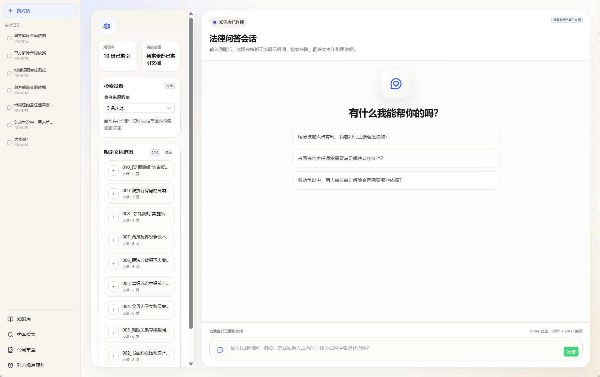
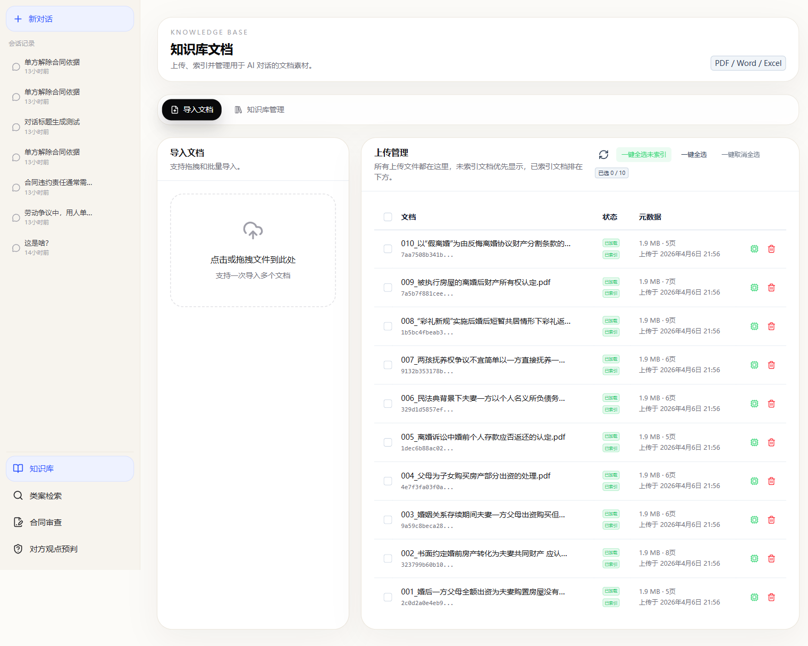
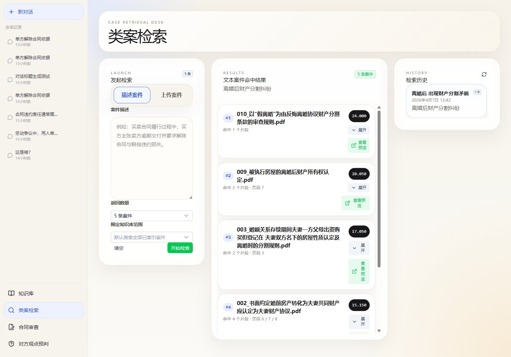
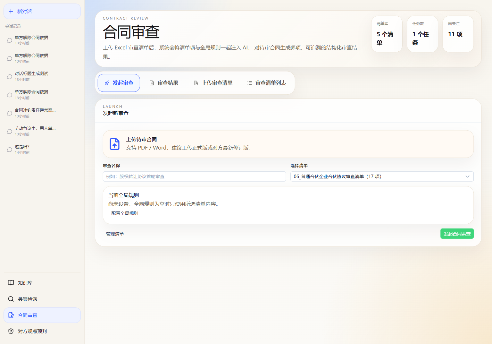

系统概览
系统简介
法律智能辅助系统是一个基于 AI 多智能体架构的法律工作平台，集成了知识库管理、类案检索、合同审查、对方观点预判和法律问答五大核心功能模块，帮助法律从业者高效完成案件准备和法律分析工作。
💡 核心优势：所有模块共享统一的知识库，上传一次文档即可在所有功能中使用，形成完整的法律工作闭环。
法律问答
自然语言提问，AI 基于知识库回答并附引用
知识库
上传 PDF/Word/Excel 文档，自动索引管理
类案检索
输入案情关键词，检索相似案例与裁判规则
合同审查
上传合同文件，智能识别风险条款与修改建议
对方观点预判
多智能体接力推演，预测对方庭审策略与主张
系统工作流程
通用布局与导航
页面布局
系统所有页面采用统一的三栏布局，确保操作体验一致：
| 区域 | 功能 | 说明 |
|---|---|---|
| 左侧栏 | 导航与会话管理 | 新对话按钮、会话记录列表、功能导航链接 |
| 主内容区 | 核心功能操作 | 根据当前模块显示不同的操作面板和结果 |
| 辅助面板 | 配置与结果展示 | 检索设置、文档范围选择、历史记录等 |
功能导航栏
左侧导航栏提供四个核心功能模块的快速切换：
| 导航项 | 路径 | 功能 |
|---|---|---|
| 知识库 | /documents |
管理已上传和索引的法律文档 |
| 类案检索 | /search |
检索相似案例作为参考 |
| 合同审查 | /contract-review |
智能合同条款审查与分析 |
| 对方观点预判 | /opponent-analysis |
多智能体推演对方观点 |
法律问答
功能说明
法律问答是系统的首页默认功能（路径
/chat）。你可以用自然语言提出任何法律问题，AI
会基于已索引的知识库文档进行检索和分析，给出带有引用依据的专业回答。
💡 核心特点：回答不是凭空生成，而是基于知识库中的真实文档进行检索后给出，每一条回答都附带引用来源。
📋 使用步骤
输入法律问题
在底部输入框中输入你的法律问题。例如：
- 房屋被他人占有时，我应如何主张返还原物？
- 合同违约责任通常需要满足哪些认定条件？
- 劳动争议中，用人单位单方解除合同需要哪些依据？
输入框提示：Enter 发送，Shift + Enter 换行
配置检索范围（可选）
在左侧辅助面板中，你可以调整检索设置：
- 参考来源数量：下拉选择检索条数（默认 5 条）
- 限定文档范围：勾选特定文档或点击「全选」使用全部文档
- 当前范围：显示当前检索范围（全部已索引文档 / 指定文档）
查看回答与引用
发送问题后，系统会按聊天流逐步展示：
- 你的提问
- AI 的检索步骤和过程
- 结构化的回答文本
- 引用的文档来源和依据
界面截图

提示：首页默认跳转到
/chat
页面。确保已上传相关文档到知识库，回答质量会更好。
知识库
功能说明
知识库（路径
/documents）是整个系统的数据基础。在这里上传、管理和索引法律文档，所有其他功能模块都依赖知识库中的文档进行分析。
💡 支持格式：PDF（按页拆分索引）、Word（全文索引）、Excel（规范化索引）
📤 上传文档
选择上传方式
在知识库页面，你可以通过以下方式上传文档：
- 点击上传按钮选择本地文件
- 支持批量上传多个文件
等待索引处理
上传后系统会自动处理文档：
- PDF 文件按页面拆分，每页作为独立索引单元
- Word 文件全文作为一个索引单元
- Excel 文件规范化后索引
- 处理完成后文档状态变为「已索引」
📋 文档管理
查看文档列表
文档列表展示所有已上传的文档，包含：
- 文档名称
- 文件格式（PDF/Word/Excel）
- 页数
- 索引状态
批量操作
文档列表支持批量管理：
- 全选/取消全选：一键选中所有文档
- 批量删除：删除选中的文档及其索引
- 批量向量化：将选中文档加入向量处理队列
界面截图

文档处理规则
| 格式 | 处理方式 | 索引单元 |
|---|---|---|
| PyPDFLoader 按页拆分 | 每页一个独立文档 | |
| Word | Docx2txtLoader 全文提取 | 全文作为一个文档（page=0） |
| Excel | UnstructuredExcelLoader 规范化 | 规范化后索引（page=0） |
类案检索
功能说明
类案检索（路径
/search）帮助你快速找到与当前案件相似的已有案例和裁判规则，为案件分析提供参考依据。
💡 使用场景：了解类似案件的裁判倾向、法律依据和判决结果，辅助制定诉讼策略。
🔍 使用步骤
输入检索关键词
在搜索框中输入与案件相关的关键词或案情描述，例如：
- 案由类型（如「劳动争议」「离婚财产分割」）
- 争议焦点（如「违法分包」「工伤认定」）
- 法律概念（如「夫妻共同债务」「彩礼返还」）
配置检索参数
根据需要调整检索设置：
- 检索条数：控制返回结果数量
- 文档范围：选择全部文档或指定文档子集
查看检索结果
系统返回匹配的案例和文档片段，包含：
- 匹配的文档/案例标题
- 相关段落内容
- 来源文档信息
- 相关性评分或排序
界面截图

合同审查
功能说明
合同审查（路径 /contract-review）利用 AI
智能分析合同条款，识别潜在风险、不合理约定和缺失条款，并提供修改建议。
💡 核心价值：快速发现合同中的风险点，避免签署不利条款，保护当事人合法权益。
📝 使用步骤
上传合同文件
将需要审查的合同文件上传到系统。支持 PDF、Word 等常见格式。
配置审查参数
设置审查相关的参数：
- 检索条数：参考的法律文档数量
- 文档范围：选择参考的法律文档子集
查看审查结果
AI 会输出详细的审查报告，通常包括：
- 风险条款识别与标注
- 不合理约定分析
- 缺失条款提醒
- 具体修改建议
- 法律依据引用
界面截图

注意：AI 审查结果仅供参考，重要合同建议结合专业律师的人工审查。
对方观点预判
功能说明
对方观点预判（路径
/opponent-analysis）是系统最强大的功能之一。基于多智能体接力推演，自动预测对方在庭审中可能提出的观点、主张和行为策略。
💡 核心机制：按四角编排接力推演，把全过程沉淀为可追流、可回放的事件时间线。
🚀 发起预测
输入案情摘要
在「案情摘要」文本框中输入案件关键事实，建议包含：
- 争议焦点与核心法律关系
- 关键时间线与事件经过
- 涉及金额与标的
- 证据缺口与待补充材料
选择检索条数与文档范围
设置推演参考的文档数量和范围：
- 通过下拉菜单选择检索条数（默认 5 条）
- 勾选需要参考的文档，或使用「全选」/「清空」快速操作
点击「发起预测」
确认信息无误后点击按钮，系统自动执行多智能体推演流程。
📊 查看推演结果
四大结果模块
| 模块 | 内容 | 使用场景 |
|---|---|---|
| 预测总览 | 对方立场、风险等级、置信度、三条主张、庭审动作、准备事项、证据清单 | 快速了解全局，制定应对策略 |
| 多智能体过程 | 各 AI 智能体的推演过程、推理链条和协作记录 | 深入了解推演逻辑，验证结论可靠性 |
| 话术与行为 | 对方可能使用的具体话术、表达方式和行为模式 | 模拟庭审对话，提前准备应答 |
| 证据依据 | 推演结论所依据的具体文档片段、法律条文和判例引用 | 核实推演依据，补充证据链 |
📈 关键指标解读
| 指标 | 含义 |
|---|---|
| 风险等级 | 低 / 中 / 高 — 本案综合风险评估 |
| 律师置信度 | AI 律师智能体对推演结果的信心百分比 |
| 当事人置信度 | AI 当事人智能体对推演结果的信心百分比 |
| 实际证据 | 系统从已索引文档中找到的相关证据条数 |
界面截图

重要声明：页面只展示预测、可能与建议，不把推演结果包装成事实。所有结果仅供参考，不构成法律意见。
会话管理
通用会话管理
所有功能模块共享统一的会话管理系统，位于左侧栏的「会话记录」区域。
新对话
点击左上角的 「新对话」 按钮，创建新的会话。这会清空当前编辑区，让你重新开始。
切换会话
点击会话记录列表中的任意条目，切换到该会话，查看完整的对话历史和结果。
管理会话
每条会话记录右侧提供两个操作按钮：
- 重命名 — 自定义会话标题，方便后续查找
- 删除 — 删除不需要的会话记录
会话记录信息
| 信息项 | 说明 |
|---|---|
| 会话标题 | 自动生成的对话主题摘要（可手动修改） |
| 时间戳 | 相对时间显示，如 "13小时前"、"14小时前" |
| 状态 | 部分模块显示会话状态（如「已完成」「进行中」） |
常见问题
Q1：如何开始使用系统？
推荐的使用顺序：
- 第一步：进入「知识库」上传相关法律文档（PDF/Word/Excel）
- 第二步：等待文档索引完成
- 第三步：根据需要切换到对应功能模块开始使用
Q2：为什么某些按钮是灰色的？
按钮被禁用通常因为前置条件未满足：
- 「发起预测」需要填写案情摘要并选择至少一个文档
- 「发送」需要输入框中有内容
- 确保已上传文档到知识库，否则部分功能无法使用
Q3：AI 的回答/推演结果准确吗？
系统提供的是基于已有文档的分析和预测，结果质量取决于：
- 知识库中文档的相关性和覆盖面
- 输入信息的详细程度和准确性
- 检索参数的合理设置
重要：所有 AI 输出仅供参考，不构成法律意见或事实认定。重要案件请结合专业律师的人工分析。
Q4：如何上传新的法律文档？
点击左侧导航栏的 「知识库」 进入文档管理页面，上传 PDF、Word、Excel 等格式的法律文档。系统会自动进行索引处理，之后即可在所有功能中使用。
Q5：各模块之间的文档是共享的吗？
是的。所有功能模块共享同一个知识库。上传一次文档后，可以在法律问答、类案检索、合同审查和对方观点预判中统一使用。你也可以在每个模块中单独选择参考的文档子集。
Q6：支持的文档格式和处理方式？
| 格式 | 处理方式 | 说明 |
|---|---|---|
| 按页拆分 | 每页作为独立索引单元，便于精确定位 | |
| Word | 全文提取 | 整个文档作为一个索引单元 |
| Excel | 规范化处理 | 数据规范化后索引 |
快速参考手册
最佳实践清单
- 先上传与案件直接相关的法律文档到知识库
- 案情摘要应包含：争议焦点、关键事实、时间线、金额
- 检索条数建议设置为 5-10 条，平衡全面性与效率
- 优先选择与案件法律关系最匹配的文档
- 利用「多智能体过程」验证推演逻辑的合理性
- 定期清理不需要的历史会话，保持界面整洁
- 重要决策请结合专业律师的人工分析
功能速查表
| 功能 | 路径 | 核心用途 | 关键操作 |
|---|---|---|---|
| 法律问答 | /chat |
自然语言法律咨询 | 输入问题 → 获取带引用的回答 |
| 知识库 | /documents |
文档上传与管理 | 上传 → 等待索引 → 批量管理 |
| 类案检索 | /search |
相似案例查找 | 输入关键词 → 查看匹配结果 |
| 合同审查 | /contract-review |
合同风险分析 | 上传合同 → 获取审查报告 |
| 对方观点预判 | /opponent-analysis |
庭审策略预测 | 输入案情 → 多智能体推演 → 查看结果 |
📌 系统地址：http://47.113.187.234:3000/